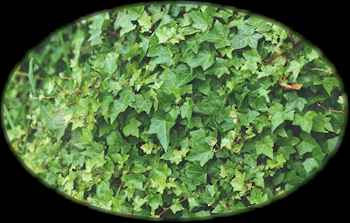
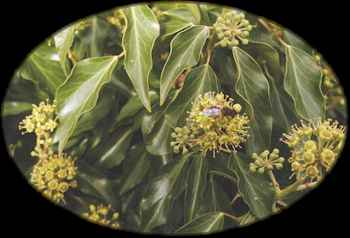

Gort
Ivy (September 30 - October 28)

Ivy - Ivy (Hedera helix L.) is also a vine, growing to 100 feet long in beech woods and around human habitations, where it is widely planted as a ground cover. Ivy produces greenish flowers before Samhain on short, vertical shrubby branches. The leaves of these flowering branches lack the characteristic lobes of the leaves of the rest of the plant. Like holly, ivy is evergreen, its dark green leaves striking in the bare forests of midwinter. Ivy is widely cultivated in North America. It is a member of the Ginseng family (Araliaceae). Curtis Clark
